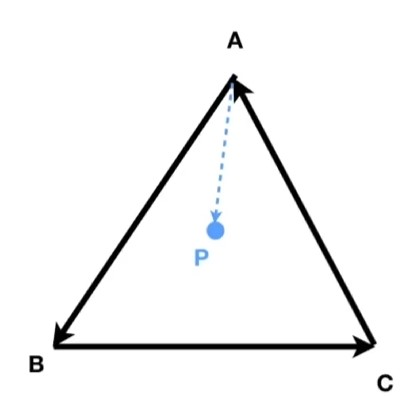
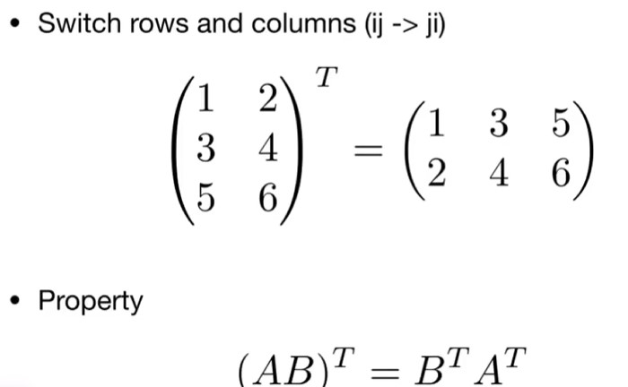

Lecture02 Review of Linear Algebra
向量的点积 Dot prodct
对于单位向量（\(\hat{a}\)、\(\hat{b}\) 为单位向量，即 \(\|\hat{a}\|=1\)、\(\|\hat{b}\|=1\)），夹角余弦可简化为：
向量点积的运算律
-
交换律：
$$ \vec{a} \cdot \vec{b} = \vec{b} \cdot \vec{a} $$ -
分配律：
$$ \vec{a} \cdot (\vec{b} + \vec{c}) = \vec{a} \cdot \vec{b} + \vec{a} \cdot \vec{c} $$ -
数乘结合律：
$$ (k\vec{a}) \cdot \vec{b} = \vec{a} \cdot (k\vec{b}) = k(\vec{a} \cdot \vec{b}) $$
In 2D
$$
\vec{a} \cdot \vec{b} = \begin{pmatrix} x_a \ y_a \end{pmatrix} \cdot \begin{pmatrix} x_b \ y_b \end{pmatrix} = x_a x_b + y_a y_b
$$
In 3D
$$
\vec{a} \cdot \vec{b} = \begin{pmatrix} x_a \ y_a \ z_a \end{pmatrix} \cdot \begin{pmatrix} x_b \ y_b \ z_b \end{pmatrix} = x_a x_b + y_a y_b + z_a z_b
$$
向量的点积运算可以理解为向量a在向量b上的投影长度乘以向量b的长度，即：\(\vec{a} \cdot \vec{b} = \|\vec{a}\| \|\vec{b}\| \cos \theta\)
{kind=link}
向量的点乘可以判断向量前与后的信息：
- 如果点积为正，说明向量a在向量b的方向上;
- 如果点积为负，说明向量a在向量b的方向上；
- 如果点积为0，说明向量a与向量b正交。
向量的叉积 Cross product
{kind=link}
- 叉乘的结果向量与参与叉乘的两个初始向量都正交（即垂直）
- 叉乘结果向量的方向由右手定则来确定
- 叉乘在构建坐标系的过程中很有用
右手螺旋定则：四指的方向是向量旋转的方向，拇指的方向是结果向量的方向
要注意，向量的叉积得到的结果永远是一个向量，而向量的长度可以是0
在右手坐标系中： $$ \vec{x} \times \vec{y} = +\vec{z} $$ 在左手坐标系中： $$ \vec{y} \times \vec{x} = -\vec{z} $$
向量叉积的运算律
(注意向量的叉乘没有交换律)
向量的叉积以代数的形式展示：
向量叉积在图形学中的作用
判断左和右
{kind=link}
\(\vec{a} \times \vec{b}\) 为正，说明向量a在向量b的左侧；为负，说明向量a在向量b的右侧。
判断内与外 
{kind=link}
-
\(\vec{AB}\times\vec{AP}> 0\) 说明\(P\)在\(\vec{AB}\)左侧
-
\(\vec{BC}\times\vec{BP}> 0\) 说明\(P\)在\(\vec{BC}\)左侧
-
\(\vec{CA}\times\vec{CP}> 0\) 说明\(P\)在\(\vec{CA}\)左侧
说明点P落在三角形ABC内部(三角形绕向相反时，叉积都小于零时在内部)
将任意一个向量分解到三个轴的方向上
矩阵 Martrices
矩阵的乘法
只有满足\((M \times N)(N \times P) = (M \times P)\)才能进行矩阵乘法
矩阵的性质
{kind=link}
矩阵乘向量
{kind=link}
矩阵的转置
 先调换再转置
{kind=link}
单位矩阵

向量的点乘、叉乘（矩阵形式）
Dot product
Cross product